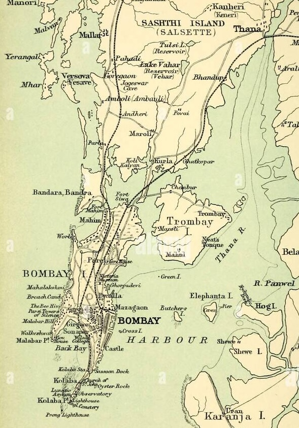
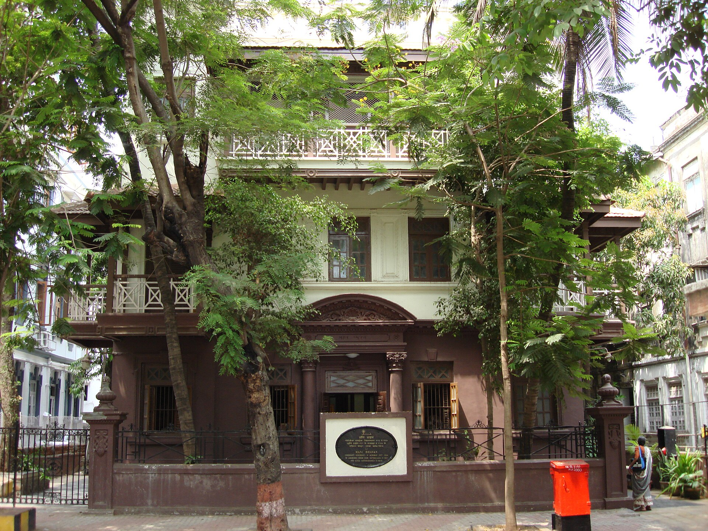

Param Krupalu Dev was requested to perform Avdhan at Theosophical society in Mumbai at the age of 18 in 1942 V.S. (1886 AD).
Contents Hide
Mumbai

Map of Bombay, 1893 AD. At the time when Prabhu was there.
| Mumbai | |
|---|---|
| Country | India |
| State | Gujarat |
| Population | 194,947 (2011) |
| Known for | Ceramics industry, Shrimad Rajchandra |
The city of Mumbai (that time Bombay) in 1893 that time when Param Krupalu Dev had visited, and when he was visiting, he had his Pedhi was quite different from what it looked like today from the map on the right side you can see that the in the north Versova and all these were islands, Juhu didn't even even exist. The entire west side of the Western line was nothing but ocean and then you can see below Parla there is a small piece of land. That is Santacruz where Param Krupalu Dev first stayed. now coming down we can see that Mahim and the Dadar as well where Framjee Cawasjee institure is there, and from below there down, you can see Girgaon and where Zaveri Bazaar is. You can see the two train lines: one going from Bori Bandar (present: Chitrapati Shivaji Maharaj Terminus) to Thana and the second one from Kolaba station going towards Borivali, so this might be the train line which Param Krupalu Dev have taken.
Shatavdhan at Framjee Cawasjee Institute
Main article: Avdhans

Mani Bhavan, Mumbai - where Gandhiji met Shrimad Rajchandraji
Param Krupalu Dev performed Shatavdhan on 22nd January, Saturday at Framjee Cawasjee Institute. Was a huge day for Param Krupalu Dev because not only did he rise to that level of fame, but also temendous Vairagya came in him, that next day only he decided to not accept anyone Avdhan invitations. Because people were giving him so much importance, and it was not the goal of his life. He just wanted to be a devoted bhakt of Bhagvan.
One of the attendees of the Shatavdhan was Maneklal Ghelabhai. His father was a great Zaveri. He was impresed by Param Krupalu Dev's avdhan. Post that Param Krupalu Dev and him had a conversation, in that Param Krupalu Dev telling him he needed to earn some money but didn't know how. Maneklal Ghelabhai agreed to teach him Zaverat and so taught him. Was one of the partners when Param Krupalu Dev started company. Newpaper articles including british newspapers parising him. Bappa first photo in suit was at this place as he attended a wedding.
Comes in search of business
Just pefore Paryushan that year, is the time he decided that he will need to earn/do business and comes to Bombay, stays at Kalbadevi somewhere . Because the financial situation of family was so bad his Mother Devba's ornaments also were mortgaged and the family was huge, 2 sisters were unmarried. So Param Krupalu Dev being the eldest son, couldnt even afford to think of Diksha and had to earn money. For that he had to leave Vavaniya and go to Mumbai. That time an Astrologer told him that you will get a lot of fame and wealth, both in just 1 year. And one thing got right, he got fame, but no wealth. That made him curious and ponder about the astrologer's predictions that half got right and half wrong, that is the astrologer fake or there was some mistake in predicting. So Param Krupalu Dev then went deeper in Astrology and then he reached a state wehre Palmistry, Horoscope and just seeing the Face he could tell a persons birth year, birth time and all past, future. In this only he told Revashakar Jagjivan that lawyer career wont work well for you, going to mumbai and doing jewellery business will be very profitable to you and so he left Morbi, he had some money and then finally partnered up with Param Krupalu Dev to start Revashankar Jagjivan Company. When he first came to Mumbai in search of business, he stayed at Santacruz for 6 months in the basement of home of Tribhuvan Bhanji.
Tells about Jatismaran Jnan
Param Krupalu dev tells the story of his Jatismaran Jnan to Padamsi Thakarsibhai at a derasar in Mumbai
Revashankar Jagjivan Company
Mani Bhavan - residence of the Jagjivan brothers where Gandhiji first met Param Krupalu Dev
Commences jewellry business: "Revashankar Jagjivan ni Pedhi". Was named after one of the parteners: Revashakar Jagjivan as he was getting the funds. The residense of the Jagjivan brothers was Mani Bhavan. It is speculated it was this place where Gandhiji first met Param Krupalu Dev. In 1995 AD, bappa has done patishta of Param Krupalu Dev's Chitrapat in Mani Bhavan. Second partner: Maneklal Ghelbabhai who had the knowledge of jewellery. And third Param Krupalu Dev. Revashankar knew that Param Krupalu Dev could manage the company worderfully as Param Krupalu Dev was perfect, ethical. On one such business occasion Param Krupalu Dev had to go to Surat because the business required a lot of travel to Surat, Bharuch, Ahmedabad, and in that he meets Nagin Kapoorchand which then adds as a partner in the company. earlier Param Krupalu Dev was staying at Santacruz in the basement of home of Tribhuvan Bhanji, but then when comapny started, to and fro was very difficult, so he shifted to some place in Girgaon.
In current times
That was the room in which Param Krupalu Dev was born and his craddle was there. But unfortunately in the Bhuj 2001 earthquake, the place got cracks and the building was falling, mandir was falling so was temporarily closed for darshan, and thus it had to be renovated. But becuase of that it lost its orignality which Bappa had seen earlier opposed to which we will see now. Orignally the house was C-shaped.